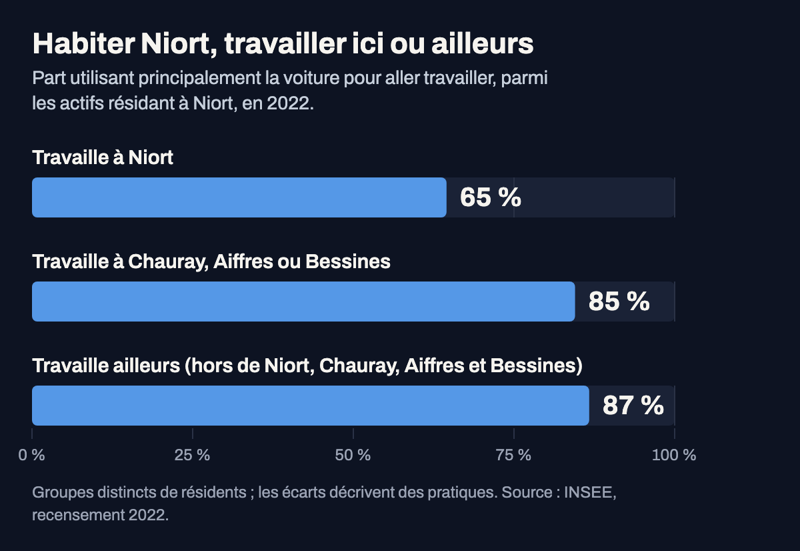

Part des actifs occupés qui vont travailler principalement en voiture, par secteur statistique (IRIS) de
Niort, en 2022. Les noms de secteurs sont ceux de l'INSEE. Estimations par sondage : les petits écarts
entre secteurs ne doivent pas être surinterprétés. Les zones d'activités sont exclues. Source : INSEE,
recensement de la population 2022 ; contours IRIS IGN.

Actifs occupés résidant à Niort, selon leur commune de travail : Niort ; Chauray, Aiffres ou Bessines ;
ou toute autre commune. Groupes distincts de personnes : métier, horaires et quartier diffèrent aussi.
Source : INSEE, recensement de la population 2022, fichier détail des mobilités professionnelles.